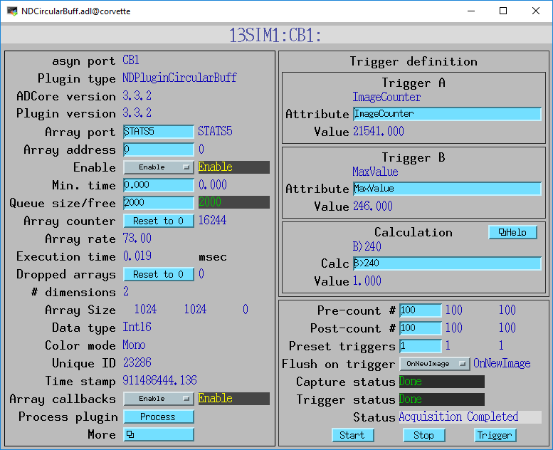

NDPluginCircularBuff
- author:
Edmund Warrick, Diamond Light Source and Mark Rivers, University of Chicago
Overview
NDPluginCircularBuff is a triggering plugin. It receives NDArrays from a plugin or driver and checks whether a user-defined trigger condition has been met. The trigger condition is based on the values of up to two NDAttributes attached to the NDArray. The attribute values are used in a general calculation expression that defines the trigger condition. Once the trigger condition is detected the plugin outputs the triggering NDArray, along with a configurable number of pre- and post-trigger NDArrays. Triggering can also be performed using a soft trigger, controlled from the “Trigger” database record.
Acquisition is started by setting the “NDCircBuffControl” parameter to non-zero (via the “Capture” record in the associated database). The plugin then copies all received NDArrays to its ring buffer, wrapping once the specified pre-count is reached.
Once the trigger is detected, the plugin will immediately output all the NDArrays stored in the ring buffer in order from oldest to newest (by calling doCallbacksGenericPointer). After the trigger is set, new NDArrays will then be output as soon as they arrive, until the post-count is reached. The plugin will then stop buffering or outputting NDArrays until it is restarted via NDCircBuffControl. The plugin will also automatically restart if the following condition is true:
(PresetTriggerCount == 0) || ((PresetTriggerCount > 0) && (ActualTriggerCount < PresetTriggerCount)))
NDPluginCircularBuff inherits from NDPluginDriver. The NDPluginCircularBuff class documentation describes this class in detail.
NDPluginCircularBuff defines the following parameters. It also implements all of the standard plugin parameters from NDPluginDriver. The EPICS database
NDCircularBuff.template provides access to these parameters, listed in the following table.
Parameter Definitions in NDPluginCircularBuff.h and EPICS Record Definitions in NDCircularBuff.template |
||||||
|---|---|---|---|---|---|---|
Parameter index variable |
asyn interface |
Access |
Description |
drvInfo string |
EPICS record name |
EPICS record type |
NDCircBuffControl |
asynInt32 |
r/w |
Toggle triggering & buffering on/off |
CIRC_BUFF_CONTROL |
$(P)$(R)Capture, $(P)$(R)Capture_RBV |
busy, bi |
NDCircBuffStatus |
asynOctet |
r/o |
Plugin status feedback string |
CIRC_BUFF_STATUS |
$(P)$(R)StatusMessage |
stringin |
NDCircBuffPreTrigger |
asynInt32 |
r/w |
Number of pre-trigger NDArrays to store |
CIRC_BUFF_PRE_TRIGGER |
$(P)$(R)PreCount, $(P)$(R)PreCount_RBV |
longout, longin |
NDCircBuffPostTrigger |
asynInt32 |
r/w |
Number of post-trigger NDArrays to output |
CIRC_BUFF_POST_TRIGGER |
$(P)$(R)PostCount, $(P)$(R)PostCount_RBV |
longout, longin |
NDCircBuffTriggerA |
asynOctet |
r/w |
Name of the NDAttribute for trigger A. |
CIRC_BUFF_TRIGGER_A |
$(P)$(R)TriggerA, $(P)$(R)TriggerA_RBV |
stringout, stringin |
NDCircBuffTriggerB |
asynOctet |
r/w |
Name of the NDAttribute for trigger B |
CIRC_BUFF_TRIGGER_B |
$(P)$(R)TriggerB, $(P)$(R)TriggerB_RBV |
stringout, stringin |
NDCircBuffTriggerAVal |
asynFloat64 |
r/o |
Value of the NDAttribute for trigger A. The attribute defined by TriggerA must have a numeric datatype, not string. This value field only updates when the plugin is capturing (Capture=1). |
CIRC_BUFF_TRIGGER_A_VAL |
$(P)$(R)TriggerAVal |
ai |
NDCircBuffTriggerBVal |
asynFloat64 |
r/o |
Value of the NDAttribute for trigger B. The attribute defined by TriggerB must have a numeric datatype, not string. This value field only updates when the plugin is capturing (Capture=1). |
CIRC_BUFF_TRIGGER_B_VAL |
$(P)$(R)TriggerBVal |
ai |
NDCircBuffTriggerCalc |
asynOctet |
r/w |
The calculation expression for the trigger. This can be any valid expression accepted by the EPICS calc routines in libCom, and used for example in the EPICS calc record. The maximum length of the expression is currently set to MAX_INFIX_SIZE (100) defined in postfix.h in EPICS base. |
CIRC_BUFF_TRIGGER_CALC |
$(P)$(R)TriggerCalc, $(P)$(R)TriggerCalc_RBV |
waveform, waveform |
NDCircBuffTriggerCalcVal |
asynFloat64 |
r/o |
Value of the calculated expression. This value field only updates when the plugin is capturing (Capture=1). |
CIRC_BUFF_TRIGGER_CALC_VAL |
$(P)$(R)TriggerCalcVal |
ai |
NDCircBuffPresetTriggerCount |
asynInt32 |
r/w |
Controls how many times the plugin can be triggered before capture stops. The default is 1, so the plugin will only trigger once and then stop capturing. If this is 0 then the plugin will continue to retrigger forever until it is stopped by setting Capture=0. |
CIRC_BUFF_PRESET_TRIGGER_COUNT |
$(P)$(R)PresetTriggerCount, $(P)$(R)PresetTriggerCount_RBV |
longout, longin |
NDCircBuffActualTriggerCount |
asynInt32 |
r/o |
The number of triggers that have occurred since capture was last started. |
CIRC_BUFF_ACTUAL_TRIGGER_COUNT |
$(P)$(R)ActualTriggerCount_RBV |
longin |
NDCircBuffCurrentImage |
asynInt32 |
r/o |
Number of NDArrays currently stored in ring buffer |
CIRC_BUFF_CURRENT_IMAGE |
$(P)$(R)CurrentQty_RBV |
longin |
NDCircBuffPostCount |
asynInt32 |
r/o |
Number of post-trigger NDArrays emitted so far |
CIRC_BUFF_POST_COUNT |
$(P)$(R)PostTriggerQty_RBV |
longin |
NDCircBuffSoftTrigger |
asynInt32 |
r/w |
Set to non-zero to force a trigger on next NDArray |
CIRC_BUFF_SOFT_TRIGGER |
$(P)$(R)Trigger |
busy |
NDCircBuffTriggered |
asynInt32 |
r/o |
Current trigger status |
CIRC_BUFF_TRIGGERED |
$(P)$(R)Trigger_RBV |
bi |
NDCircBuffFlushOnSoftTrig |
asynInt32 |
r/o |
Defines behaviour of the flush functionality. Choices are: |
CIRC_BUFF_FLUSH_ON_SOFTTRIGGER |
$(P)$(R)FlushOnSoftTrg, $(P)$(R)FlushOnSoftTrg_RBV |
bo, bi |
Triggering using NDArray attributes is quite powerful. Two NDArray attributes can be used for triggering. The names of these attributes are defined with the TriggerA and TriggerB records. The values of these attributes must be numeric, not string. The TriggerCalc record defines a calculation expression that uses that same syntax as the EPICS calc record. If the expression evaluates to a non-zero value then the plugin will be triggered. The variables in the expression are defined as follows:
A The current value of the NDAttribute defined by TriggerA.
B The current value of the NDAttribute defined by TriggerB.
C The value of the PreCount record
D The value of the PostCount record
E The value of the CurrentQty_RBV record
F The value of the PostTriggerQty_RBV record
G The value of the Trigger_RBV record
The following are some example expressions. They assume that the NDPluginCircularBuff plugin is getting its data from the NDPluginStats plugin and that the NDPluginStats plugin is using an attributes XML file containing the following lines:
<attribute name="MaxValue" type="PARAM" source="MAX_VALUE" datatype="DOUBLE" description="Maximum value" />
<attribute name="CentroidX" type="PARAM" source="CENTROIDX_VALUE" datatype="DOUBLE" description="Centroid X position" />
Assume that TriggerA is set to MaxValue and TriggerB is set to CentroidX.
The following are examples of some expressions that can then be used for triggering:
Expression |
Description |
|---|---|
A<200 |
Intensity of brightest pixel is less than 200 |
A>1.5*H && E>50;H:=A |
Intensity of brightest pixel (A) is more than 150% of the value in the previous image (H) and there are at least 50 images in the circular buffer. Set H to A after evaluation. |
B<300 || A>100 |
X centroid is less than pixel 300 or the maximum intensity is greater than 100. |
If the TriggerA or TriggerB attrbutes do not exist, or if they are
non-numeric datatype then the TriggerAVal or TriggerBVal is set to NaN
(Not a Number). If that value is used in the calculation expression then
in some cases the TriggerCalcVal will also be NaN (for example A+B will
be NaN). If TriggerCalcVal is NaN or Infinity then the expression is
treated as 0 and the trigger will not occur. However, some expressions
involving NaN arguments do not result in a NaN result and could result
in false triggers. For example (A&&B) evaluates as 1 when both A and B
are NaN. To avoid this problem the isnan() and isinf() functions can be
used in the expression.
It is possible to continuously output individual NDArrays that match the trigger condition. To do this set PreCount=0, PostCount=1, and PresetTriggerCount=0.
Screen shots
The following is the MEDM screen that provides access to the parameters in NDPluginDriver.h and NDPluginCircularBuff.h through records in NDPluginBase.template and NDCircularBuff.template.
Configuration
The NDPluginCircularBuff plugin is created with the NDCircularBuffConfigure command, either from C/C++ or from the EPICS IOC shell.
NDCircularBuffConfigure(const char *portName, int queueSize, int blockingCallbacks,
const char *NDArrayPort, int NDArrayAddr,
int maxBuffers, size_t maxMemory)
For details on the meaning of the parameters to this function refer to the detailed documentation on the NDCircularBuffConfigure function in the NDPluginCircularBuff.cpp documentation and in the documentation for the constructor for the NDPluginCircularBuff class.
In particular, note that maxBuffers constrains the size of the ring buffer - the plugin will discard any changes to the pre- or post count if this would result in (pre-count + post-count) exceeding maxBuffers.